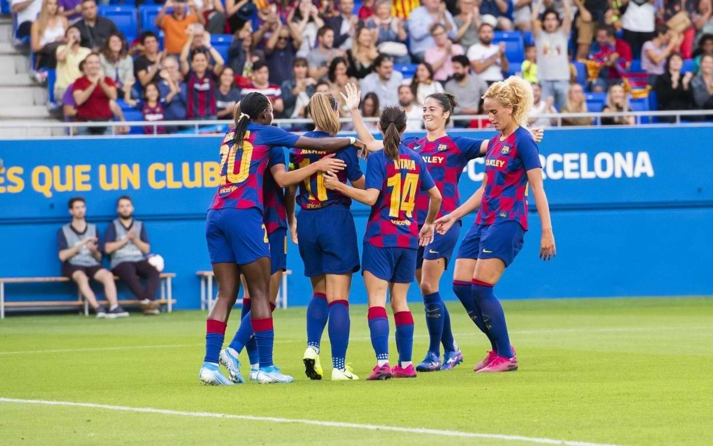

FCB Femenino
La sección de fútbol femenino milita en la máxima categoría, la Primera División. En su palmarés figuran cinco Ligas, cuatro Copas de la Reina y siete Copas de Cataluña.
El primer partido de fútbol femenino que jugó un equipo del F.C. Barcelona fue el día de Navidad de 1970 con motivo de un festival benéfico. El encuentro enfrentó en el Camp Nou a las jugadoras azulgranas, entrenadas por Antoni Ramallets, contra la UE Centelles. Posteriormente participó en el primer campeonato oficioso de Cataluña de fútbol femenino, celebrado en la temporada 1971-72.
Durante los años 80 y los años 90 la entidad participó bajo el nombre de Club Femení Barcelona, y utilizó los colores, distintivos e instalaciones del Club. Durante aquellos años obtuvo sus mayores éxitos en la competición de la Copa de la Reina al alcanzar un subcampeonato (1991) y un campeonato (1994).

En 2001 el FC Barcelona incorporó definitivamente el fútbol femenino como sección oficial y continuó compitiendo en la segunda categoría, la Primera Nacional de Fútbol Femenino. En la temporada 2003-04 superó la promoción de ascenso y ascendió a la Superliga, pero aquello no se tradujo en su consolidación. En la temporada 2006-07, el equipo perdió la categoría e incluso se llegaba a plantear su desaparición.
Con la llegada al banquillo de Xavi Llorens en la temporada 2007-08 el equipo retornó a la Superliga. Desde 2010 la sección ha encadenado un éxito tras otro logrando cuatro Ligas consecutivas (2011-12, 2012-13, 2013-14 y 2014-15), cuatro Copas de la Reina (2011, 2013, 2014 y 2017) y siete Copas de Cataluña (2009, 2010, 2011, 2012, 2014, 2015 y 2016).